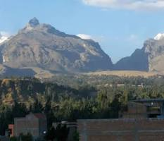

Peru is located in South america, it borders 5 countries which are Ecuador, Colombia, Brazil, Bolivia and Chile. the Spanish divided it into three main regions for political rather than geographical reasons:
the Coast, adjacent to the Pacific Ocean; the Highlands, located in the Andean mountains; and the Amazon Jungle.
Peru holds the 2nd largest share of the Amazon Rainforest with Brazil being the first.
Most Peruvian territory is covered by the dense forests on the east side of the Andes mountains, yet only 5% of Peruvians live in this area. more than 60% of Peru's territory is covered by the amazon rain forest
. More than any other country even though Peru only holds 11% of the whole amazon rainforest. 782,880.55 km2 (302,271.87 sq mi) (60.91% of Peruvian territory and approximately 11.05% of the entire Amazon jungle).

the Andean highland region where approximately half of the country's population lived in 1990. It is formed by three ranges of mountains with fertile river valleys, high plains, and deep canyons.
It is the only mountainous area in the lower Amazonian jungle. The best-known feature of the range is a pyramid-like mountain called El Cono.
On November 8, 2015, the Peruvian government announced it had designated 3.3 million acres of rainforest in the mountain range as a national park
Peru's coastal region, known as "La Costa," is a long, narrow, arid desert strip along the Pacific, punctuated by fertile river valleys (like those for sugar & grapes), home to the capital Lima.
The coastal region of Peru runs from the northern border with Ecuador to the southern border with Chile, encompassing a diverse landscape that includes deserts, fertile valleys, and beaches.
This region is primarily arid, making it one of the driest coastal areas in the world. The average temperatures range from 64 to 86 °F (18 to 30 °C), with the northern coast being warmer and more tropical, while the southern coast tends to be cooler and cloudier.